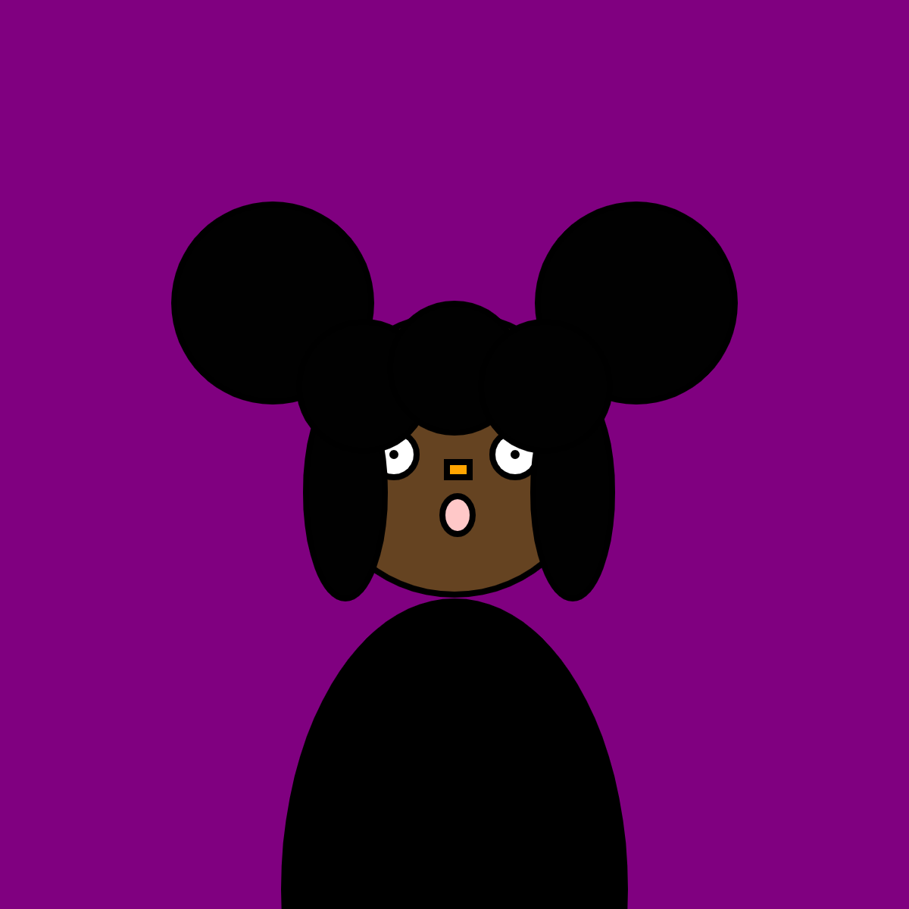

Code As Art

function setup() {
createCanvas(600, 600);
}
function draw() {
background("purple");
//head
fill(101, 67, 33)
circle(300, 300, 185);
strokeWeight(4);
//lefteye
fill(255)
circle(260, 300, 30)
fill(1)
circle(260, 300, 2)
//righteye
fill(255)
circle(340, 300, 30)
fill(1)
circle(340, 300, 2)
//nose
fill(255, 165, 0)
rect (295, 305, 15, 10)
//mouth
fill(255, 200, 200)
ellipse(302, 340, 20, 25)
//hair
fill(1)
circle(180, 200, 130)
circle(420, 200, 130)
ellipse(228, 325, 52, 140)
ellipse(378, 325, 52, 140)
circle(240, 255, 85)
circle(300, 243, 85)
circle(360, 255, 85)
//body
fill(0)
ellipse(300,587,225,380)
}
P5.js
A mini self-portrait of myself
________________________

var img;
//var img2;
//var img3;
var initials ='aw'; // your initials
var choice = '1'; // starting choice, so it is not empty
var screenbg = 250; // off white background
var lastscreenshot=61; // last screenshot never taken
function preload() {
// preload() runs once, it may make you wait
// img = loadImage('cat.png'); // cat.jpg needs to be next to this .js file
// you can link to an image on your github account
img = loadImage('https://veryprofessional3d.github.io/images/cat3.jpg');
// img2 = loadImage('https://veryprofessional3d.github.io/images/cat2.jpg');
// img3 = loadImage('https://veryprofessional3d.github.io/images/rainbow.gif');
}
function setup() {
createCanvas(600, 600); // canvas size
background(screenbg); // use our background screen color
}
function draw() {
if (keyIsPressed) {
choice = key; // set choice to the key that was pressed
clear_print(); // check to see if it is clear screen or save image
}
if (mouseIsPressed){
newkeyChoice(choice); // if the mouse is pressed call newkeyChoice
}
}
function newkeyChoice(toolChoice) { //toolchoice is the key that was pressed
// the key mapping if statements that you can change to do anything you want.
// just make sure each key option has the a stroke or fill and then what type of
// graphic function
if (toolChoice == '1' ) { // first tool
strokeWeight(09);
line(mouseX, mouseY, pmouseX, pmouseY);
} else if (toolChoice == '2') { // second tool
strokeWeight(28);
line(mouseX, mouseY, pmouseX, pmouseY);
} else if (toolChoice == '3') { // third tool
stroke(153, 101, 186, 80);
triangle(22, 10, pmouseX, pmouseY);
} else if (toolChoice == '4') {
stroke(245, 138, 66, 80);
fill(245, 138, 66)
line(200, 300, 100, 150);
circle(mouseX, mouseY, 50);
} else if (key == '5') {
stroke(225, 156, 255);
testbox(80, 56, 200);
testbox(127, 4, 16);
} else if (toolChoice == '6') {
stroke(2, 213, 250);
quad(mouseX, 0, 30, pmouseY);
} else if (toolChoice == '7') {
fill(100, 200, 100);
ellipse(mouseX, mouseY, 80, 30);
} else if (toolChoice == '8') {
stroke(241, 255, 153)
fill(220, 80, 90, 20);
rect(mouseX, 100, 20, pmouseY);
} else if (toolChoice == '9') {
fill(300, 100, 0, 80);
rect(mouseX, mouseY, 200, 40);
} else if (toolChoice == '0') {
stroke(0, 0);
fill(random(255), random(255), random(255), random(255));
rect(mouseX, mouseY, 30, 30);
} else if (toolChoice == 'g' || toolChoice == 'G') { // g places the image we pre-loaded
image(img, mouseX, mouseY, 50, 50);
// } else if (toolChoice == 'h' || toolChoice == 'H') { // g places the image we pre-loaded
// image(img2, mouseX-25, mouseY-25, 50, 50,20);
// } else if (toolChoice == 'i' || toolChoice == 'I') { // g places the image we pre-loaded
// image(img3, mouseX-25, mouseY-25, 50, 50,20);
}
}
function testbox(r, g, b) {
// this is a test function that will show you how you can put your own functions into the sketch
x = mouseX;
y = mouseY;
fill(r, g, b);
rect(x-50, y-50, 100, 100);
}
function clear_print() {
// this will do one of two things, x clears the screen by resetting the background
// p calls the routine saveme, which saves a copy of the screen
if (key == 'x' || key == 'X') {
background(screenbg); // set the screen back to the background color
} else if (key == 'p' || key == 'P') {
saveme(); // call saveme which saves an image of the screen
}
}
function saveme(){
//this will save the name as the intials, date, time and a millis counting number.
// it will always be larger in value then the last one.
filename=initials+day() + hour() + minute() +second();
if (second()!=lastscreenshot) { // don't take a screenshot if you just took one
saveCanvas(filename, 'jpg');
key="";
}
lastscreenshot=second(); // set this to the current second so no more than one per second
}
DIY Photoshop
Program(s): Processing